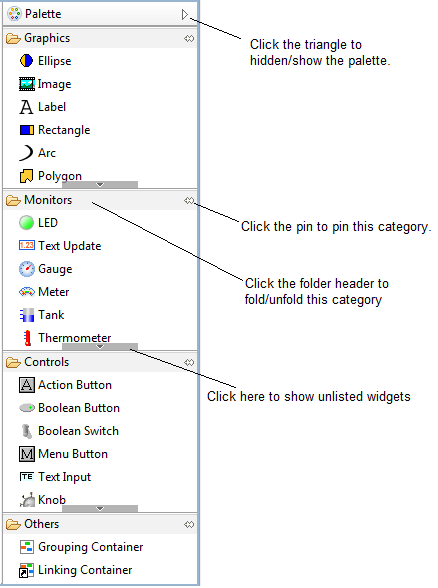
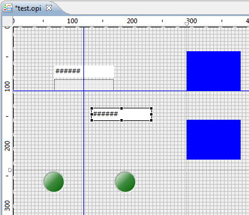
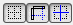
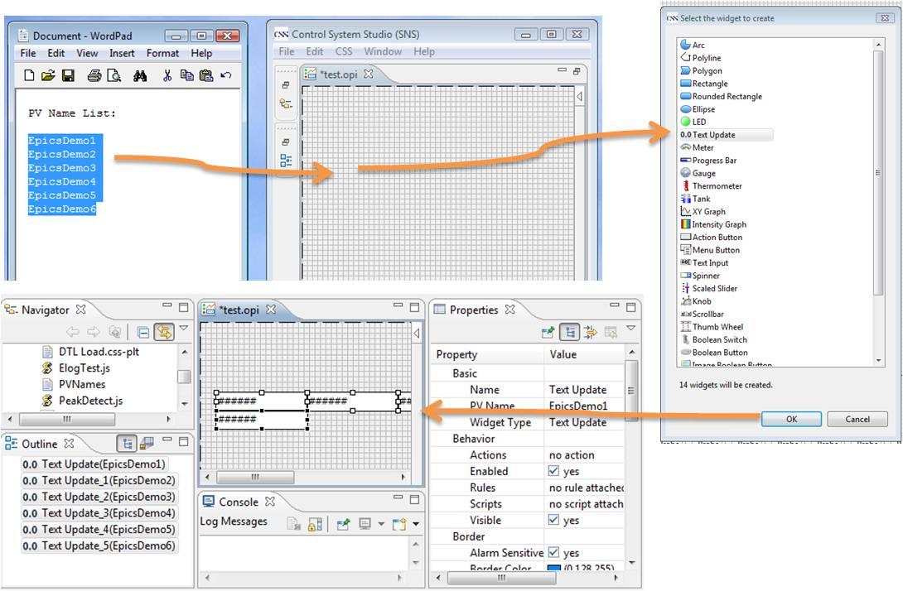

When you double click an .opi file from the Navigator, the file will be opened by OPI Editor by default. If it's
not, you can still open an .opi file with OPI Editor by right clicking the file and choose
Open With->OPI Editor.
When you double click an .opi file from the Navigator, the file will be opened by OPI Editor by default. If it's
not, you can still open an .opi file with OPI Editor by right clicking the file and choose
Open With->OPI Editor.
When you double click an .opi file from the Navigator, the file will be opened by OPI Editor by default. If it's
not, you can still open an .opi file with OPI Editor by right clicking the file and choose
Open With->OPI Editor.
The OPI Editor is a WYSIWYG (What You See Is What You Get) editor. It has most of the modern editing features which can facilitate your OPI editing:
All these features can be easily accessed from the toolbar or context menu.
Tip: In OPI Editor, press F1 key on Windows, Ctrl+F1 on GTK, Help key on Carbon to open the context help view. It will show related help whenever a widget is selected.
 The Widgets Palette hosts all the widget entries. Click the widget on the palette and then click or drag a rectangle in the editing area will create a widget on the display.
The Palette can be hidden or drag to another side of the display. When the palette is hidden, you can hover the mouse over the palette sash to temporarily show the palette.
Simply clicking on a widget in the editor or tree view will select the widget.
Press Ctrl or Shift to select more widgets.Drag widgets to move them.
Drag the border of the selected widgets to resize them. Holding Shift key while resizing will
keep the width/height ratio. Holding Ctrl key while resizing will fix the center point of the widgets.
Move and resize widgets with keyboard: Press [.] dot key to move widgets with arrow keys.
The Properties of selected widget or the common properties of multiple selected widgets are set from the Property Sheet directly.
Press Ctrl and drag the widgets to clone them.
The other functions such as copy, paste, delete, undo/redo can be easily accessed from the toolbar or context menu.
When moving widgets, the widgets can snap to grid, geomery or guide if they are enabled. These functions can be enabled either from these buttons on toolbar  or from display properties. When grid is visible, snap to grid is automatically enabled. Grid space and color can be set as display properties. If Snap to geometry is enabled, widgets will snap to the geometry position or size of other widgets. When widgets are approaching the same X, Y, Width, Height or middle points of other widgets, a blue line will show up. With this funtion, you can easily create widgets with same geometry parameter, for example, same width or same X coordinate.
Guide is useful when you are arranging or moving multiple widgets.
 on the toolbar to show the ruler in editor.
on the toolbar to show the ruler in editor.
Multiple selected widgets can be arranged in different ways with arranging buttons on toolbar
 . For example, align multiple widgets horizontally,
distribute them evenly. Simply try it out by yourself.
. For example, align multiple widgets horizontally,
distribute them evenly. Simply try it out by yourself.
Order of widgets can be changed from context menu Order or dragging them in tree view.
It can be accessied from context menu Orientation, including Flip Horizontal, Flip Vertical,
Rotate Right 90 and Rotate Left 90.
If you already has some source of PV names, for example, some text with a list of PV names, you can directly drag them to OPI Editor to create widgets with PV Name properties set as the PV names you have dragged.
